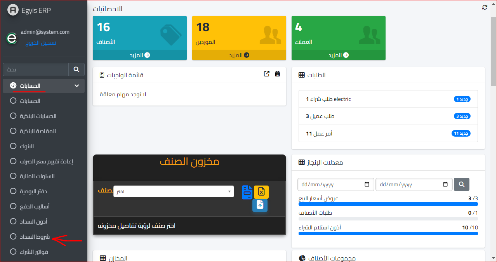
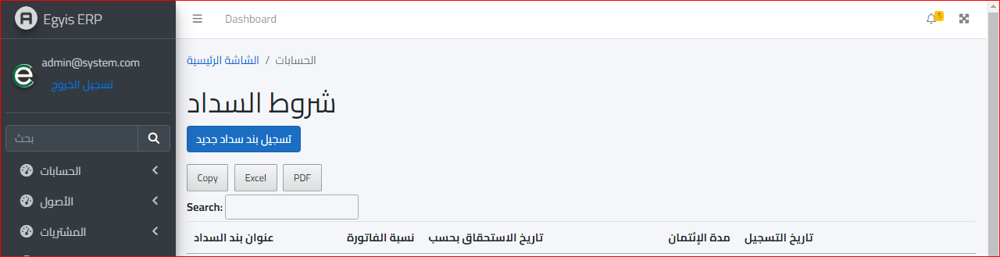
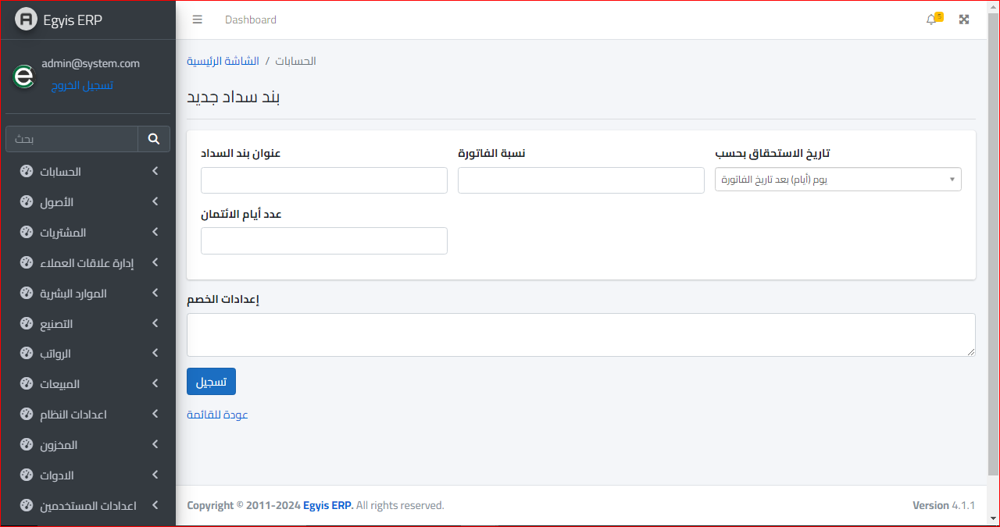

شروط السداد
ولفتح شاشة شروط السداد يتم فتح موديول الحسابات واختيار شروط السداد كالاتي :
وستظهر الشاشة التالية :
ثم نضغط على تسجيل بند سداد جديد و سنتوجه تلقائيا للشاشة التالية :
عنوان بند السداد
نسبة الفاتورة : وهي النسبة المراد تحصيلها من إجمالي الفاتورة
تاريخ الاستحقاق بحسب : وهنا يتم تحديد ما إذا كان بعدد أيام من تاريخ الفاتورة او حتى ايام بعد شهر الفاتورة .
عدد أيام الائتمان : وهو يحسب بالايام حتى لو كان تاريخ الاستحقاق يحسب بالأشهر ففي هذه الحالة يتم تحويل الشهور لعدد أيام
إعدادات الخصم : وهي توضع حسب سياسة الشركة في عمليات البيع والشراء
ثم بعد الانتهاء من ادخال البيانات السابقة يتم نقر زر تسجيل